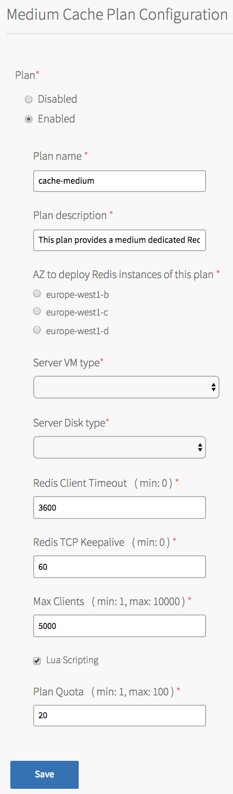
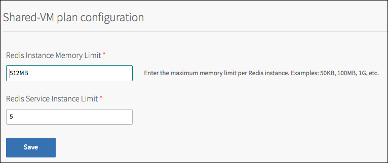
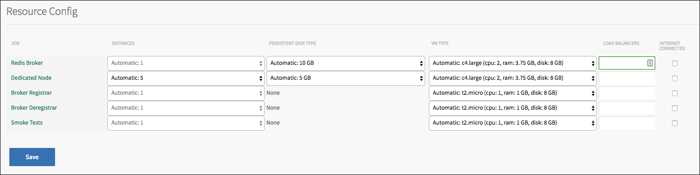
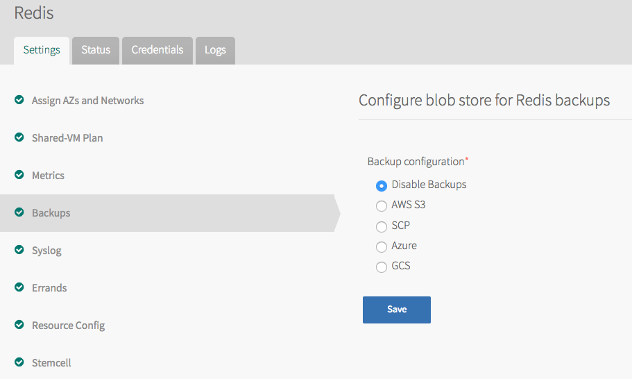
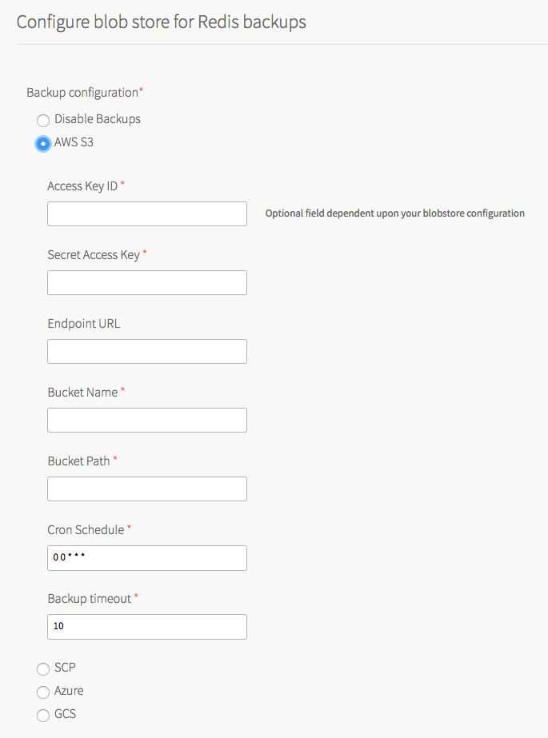
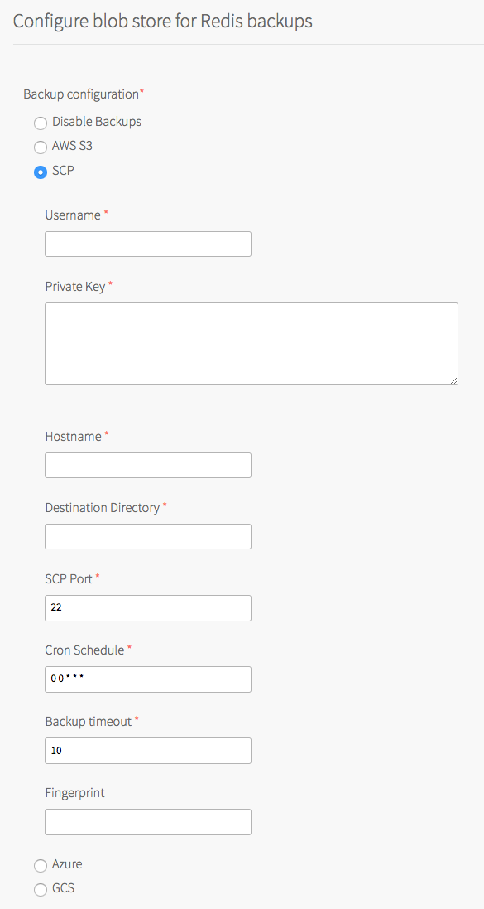
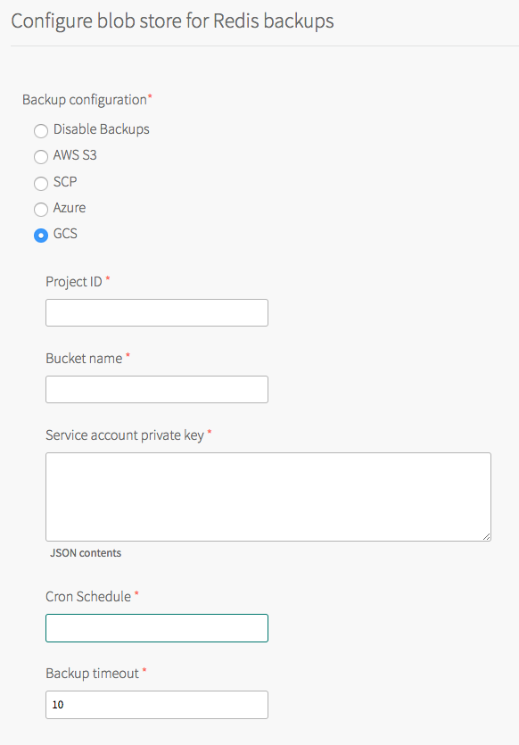
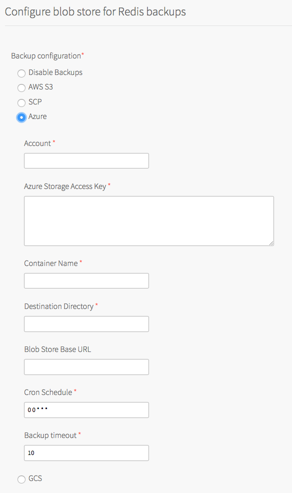
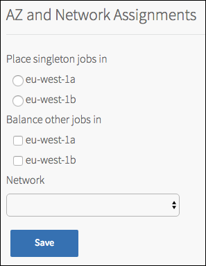

Installing and Upgrading Redis for PCF
Installation Steps
To add Redis for PCF to Ops Manager, follow the procedure for adding Pivotal Ops Manager tiles:
- Download the product file from Pivotal Network.
- Upload the product file to your Ops Manager installation.
- Click Add next to the uploaded product description in the Available Products view to add this product to your staging area.
- (Optional) Click the newly added tile to configure your possible service plans, syslog draining, and backups.
- Click Apply Changes to install the service.
Configuring PCF Redis
Configure Redis Service Plans
Select the Redis tile from the Installation Dashboard to display the configuration page and allocate resources to Redis service plans.
On-Demand Plan
- Select the tab with the plan name to configure the plan. Instances of the three opinionated plans are intended to be used as different cache sizes. The operator should configure appropriate memory and disk sizes, according to the use case.
- cache-small - A Redis instance deployed to a dedicated VM, suggested to be configured with ~1GB of memory and >3.5GB of persistent disk.
- cache-medium - A Redis instance deployed to a dedicated VM, suggested to be configured with ~2GB of memory and >10GB of persistent disk.
cache-large - A Redis instance deployed to a dedicated VM, suggested to be configured with ~4GB of memory and >14GB of persistent disk. Note that resource configuration options may vary on different IAASs.
Configure the following for your plan. The default settings, where applicable, have been pre-configured according to the memory/disk size of each plan
Choose to enable or disable the plan for your organization.
Set the plan name and description to appear in the service catalog.
Select the AZ to deploy the Redis instances from the plan.
Select the Server VM type and Server Disk type. We recommend that the persistent disk should be at least 3.5x the VM memory.
Change the Redis Client Timeout from the default as needed. Redis Client Timeout refers to the server timeout for an idle client specified in seconds. The default setting is 3600.
Change the Redis TCP Keepaplive from the default as needed. Redis TCP Keepalive refers to the interval (in seconds) at which TCP ACKS are sent to clients. The default setting is 60.
Change the Max Clients from the default as needed. Max Clients refers to the maximum number of clients that can be connected at any one time. Per plan, the default setting is 1000 for small, 5000 for medium and 10000 for large.
Enable or disable Lua Scripting as needed. The default settig is to have Lua Scripting enabled.
Set the plan quota. App Developers can cumulatively only create as many instances as the plan quota allows for. 
Click the Save button.
Shared-VM Plan
Select the Shared-VM Plan tab to configure the memory limit for each Redis instance and the maximum number of instances that can be created. 
Enter the maximum number of instances and the memory limit for each Redis instance.
Click the Save button.
Shared-VM instances run on the Redis Broker.
The memory and instance limits for your Shared-VM Redis instances should depend on the total memory of your Redis broker. When configuring the maximum number of Redis service instances that can be created you need to take into account the maximum memory each redis instance could use in correlation with how much total memory the Redis broker has. We recommend you only allow up to 45% of your Redis broker’s total memory to be used by all Redis instances. This is due the amount of memory required to support Redis persistence, and run Redis broker & system tasks.
See below for example cases:Redis Broker Total Memory Redis Instance Memory Limit Redis Service Instance Limit 16GB 512MB 14 16GB 256MB 28 64GB 512MB 56
It is possible to configure a larger Redis Service Instance Limit, if you are confident that the majority of the deployed instances will not be using a large amount of their allocated memory, for example in development or test environments.Note: This is not supported, and could cause your server to run out of memory. If this happens your users may not be able to write any further data to any Redis instance.
Select the Resource Config tab to change the allocation of resources for the Redis Broker.
The Redis Broker server will run all of the Redis instances for your Shared-VM plan. From this screen you may increase or decrease the CPU, RAM, Ephemeral Disk & Persistent Disk made available, as required.Click the Save button.
Dedicated-VM Plan
Select the Resource Config tab to change the allocation of resources for the Dedicated Node. 
By default, 5 dedicated nodes will be created, each capable of running one Redis instance. You can increase or decrease the number of dedicated nodes, the size of the Persistent and Ephemeral Disks, and the CPU and RAM, as required. The default VM size is small; it is important that the operator set the correct VM size to handle anticipated loads. Redis maxmemory is set to 45% of RAM. It is recommended the persistent disk be set to 3.5x the amount of RAM.Click the Save button.
Configure Syslog Output
Pivotal recommends that operators configure a syslog output.
Add the Syslog address, Syslog port and transport protocol of your log management tool.
The information required for these fields is provided by your log management tool.

Click the Save button.
Creating Backups of Redis Instances
You can configure backups to be run for all instances, across dedicated-VM and shared-VM service plans. Backups are not available for On-Demand instances.
The key features are:
- Runs on a configurable schedule
- Every instance is backed up, across both service plans
- The Redis broker statefile is backed up
- For each backup artefact, a file is created that contains the MD5 checksum for that artifact. This can be used to validate that the artefact is not corrupted.
- You can configure AWS S3, SCP, Azure or Google Cloud Storage as your destination
- Data from Redis is flushed to disk, before the backup is started by running a
BGSAVEon each instance - Backups are labelled with timestamp, instance GUID and plan name
Configuration
To enable backups, you will first need to choose your backup destination type - AWS S3, SCP, Azure or Google Cloud Storage.
Click on the tile in OpsManager, followed by the Backups link on the left hand menu.

S3 backup fields

| Field | Description | Mandatory/Optional |
|---|---|---|
| Access Key ID | The access key for your S3 account | Mandatory |
| Secret Access Key | The Secret Key associated with your Access Key | Mandatory |
| Endpoint URL | The endpoint of your S3 account, e.g. http://s3.amazonaws.com |
Optional, defaults to http://s3.amazonaws.com if not specified |
| Bucket Name | Name of the bucket you wish the files to be stored in. | Mandatory |
| Path | Path inside the bucket to save backups to. | Mandatory |
| Backup timeout | The amount of time, in seconds, that the backup process will wait for the BGSAVE command to complete on your instance, before transferring the RDB file to your configured destination | Mandatory |
| Cron Schedule | Backups schedule in crontab format. For example, once daily at 2am is * 2 * * *. Also accepts a pre-defined schedule: any of @yearly, @monthly, @weekly, @daily, @hourly, or @every <time>, where <time> is any supported time string (e.g. 1h30m). For more information, see the cron package documentation. |
Mandatory |
AWS IAM Policy
An AWS IAM policy describes the permissions related to your bucket. The minimum set of policies required in order to upload the backup files are:
{
"Version": "2012-10-17",
"Statement": [
{
"Effect": "Allow",
"Action": [
"s3:ListBucket",
"s3:ListBucketMultipartUploads",
"s3:ListMultipartUploadParts",
"s3:PutObject"
],
"Resource": [
"arn:aws:s3:::<bucket-name>",
"arn:aws:s3:::<bucket-name>/*"
]
}
]
}
Notes:
- Make sure to replace
<bucket-name>with your correct values. s3:CreateBucketis only required if the S3 bucket does not exist.- The additional
s3:CreateBucketaction is also required if the S3 bucket does not exist.
SCP backup fields

| Field | Description | Mandatory/Optional |
|---|---|---|
| Username | The username to use for transferring backups to the scp server | Mandatory |
| Private Key | The private ssh key of the user configured in Username |
Mandatory |
| Hostname | The hostname or IP address of the SCP server | Mandatory |
| Destination Directory | The path in the scp server, where the backups will be transferred | Mandatory |
| SCP Port | The scp port of the scp server | Mandatory |
| Cron Schedule | Backups schedule in crontab format. Refer to table for S3 backups for details | Mandatory |
| Backup timeout | The amount of time, in seconds, that the backup process will wait for the BGSAVE command to complete on your instance, before transferring the RDB file to the scp server | Mandatory |
GCS backup fields

PCF Redis uses service account credentials to upload backups to Google Cloud Storage. The service account should have Storage Admin permissions. Please refer to the documentation for details on how to set up a GCP service account.
| Field | Description | Mandatory/Optional |
|---|---|---|
| Project ID | GCP Project ID | Mandatory |
| Bucket name | Name of the bucket you wish the files to be stored in. | Mandatory |
| Service account private key | The JSON Secret Key associated with your Service Account. See documentation for details on how to set up service account keys. | Mandatory |
| Cron Schedule | Backups schedule in crontab format. For example, once daily at 2am is * 2 * * *. Also accepts a pre-defined schedule: any of @yearly, @monthly, @weekly, @daily, @hourly, or @every , where is any supported time string (e.g. 1h30m). For more information, see the cron package documentation. | Mandatory |
| Backup timeout | The amount of time, in seconds, that the backup process will wait for the BGSAVE command to complete on your instance, before transferring the RDB file to your configured destination | Mandatory |
Azure backup fields

| Field | Description | Mandatory/Optional |
|---|---|---|
| Account | Account name | Mandatory |
| Azure Storage Access Key | Azure specific credentials required to write to the Azure container | Mandatory |
| Container name | Name of the Azure container which will store backup files. | Mandatory |
| Destination Directory | Directory where the backup files will be stored within the Azure container. | Mandatory |
| Blob Store Base URL | URL pointing to Azure resource | Optional |
| Cron Schedule | Backups schedule in crontab format. For example, once daily at 2am is * 2 * * *. Also accepts a pre-defined schedule: any of @yearly, @monthly, @weekly, @daily, @hourly, or @every , where is any supported time string (e.g. 1h30m). For more information, see the cron package documentation. | Mandatory |
| Backup timeout | The amount of time, in seconds, that the backup process will wait for the BGSAVE command to complete on your instance, before transferring the RDB file to your configured destination | Mandatory |
Notes
For each backup destination, the field Backup timeout causes backups to fail after a configured timeout. Redis’ BGSAVE will continue but backups will not be uploaded to destinatons if this timeout is hit.
Networks, Security, and Assigning AZs
Network Configuration
The following ports and ranges are used in this service:
- Destination port 80 access to the service broker from the cloud controllers
- Destination port 6379 access to all dedicated nodes from the Diego Cell and Diego Brain network(s)
- Destination ports 32768 to 61000 on the service broker from the Diego Cell and Diego Brain network(s). This is only required for the shared service plan.
- Outbound access to your chosen blobstore, typically HTTP 80 or HTTPS 443
- Destination port
8301access to the consul server from the consul agent deployed on all redis VMs.
Application Security Groups
To allow this service to have network access you must create Application Security Groups (ASGs). Ensure your security group allows access to the Redis Service Broker VM and Dedicated VMs configured in your deployment. You can obtain the IP addresses for these VMs in Ops Manager under the Resource Config section for the Redis tile.
Note: Without ASGs, this service is unusable.
Application Container Network Connections
Application containers that use instances of the Redis service require the following outbound network connections:
| Destination | Ports | Protocol | Reason |
|---|---|---|---|
ASSIGNED_NETWORK |
32768-61000 | tcp | Enable application to access shared vm service instance |
ASSIGNED_NETWORK |
6379 | tcp | Enable application to access dedicated vm service instance |
Create an ASG called redis-app-containers with the above configuration and bind it to the appropriate space or, to give all started apps access, bind to the default-running ASG set and restart your apps. Example:
[
{
"protocol": "tcp",
"destination": "<code>ASSIGNED_NETWORK</code>",
"ports": "6379"
}
]
Assigning AZs
Assigning multiple AZs to Redis jobs will not guarantee high availability.
All of your Shared-VM instances will run on a single node in just one of the configured availability zones and are therefore not highly availabile.
Each Dedicated-VM instance could be assigned to any of the configured availability zones, however each instance still operates as a single node with no clustering. This separation over availability zones provides no high availability.

Validating Installation
Smoke tests
Smoke tests are run as part of Redis for PCF installation to validate that the install succeeded. Smoke tests are described here.
Upgrading Redis for PCF
This product enables a reliable upgrade experience between versions of the product that is deployed through Ops Manager.
The upgrade paths are detailed here for each released version.
To upgrade the product:
- The Operator should download the latest version of the product from Pivotal Network
- Upload the new .pivotal file to Ops Manager
- Upload the stemcell associated with the update (if required)
- Update any new mandatory configuration parameters (if required)
- Press “Apply changes” and the rest of the process is automated
During the upgrade deployment each Redis instance will experience a small period of downtime as each Redis instance is updated with the new software components. This downtime is because the Redis instances are single VMs operating in a non HA setup. The length of the downtime depends on whether there is a stemcell update to replace the operating system image or whether the existing VM can simply have the redis software updated. Stemcells updates incur additional downtime while the IaaS creates the new VM while updates without a stemcell update are faster.
Ops Manager ensures the instances are updated with the new packages and any configuration changes are applied automatically.
Upgrading to a newer version of the product does not cause any loss of data or configuration. This is explicitly tested for during our build and test process for a new release of the product.
Release policy
When a new version of Redis is released we aim to release a new version of the product containing this soon after.
Where there is a new version of Redis or another dependent software component such as the stemcell released due to a critical CVE, Pivotal’s goal is to release a new version of the product within 48 hours.
Uninstalling Redis for PCF
To uninstall Redis for PCF, click on the trashcan icon in the lower right hand corner of the PCF Redis tile in the PCF Ops Manager Installation dashboard. Confirm deletion of the product and click apply changes.